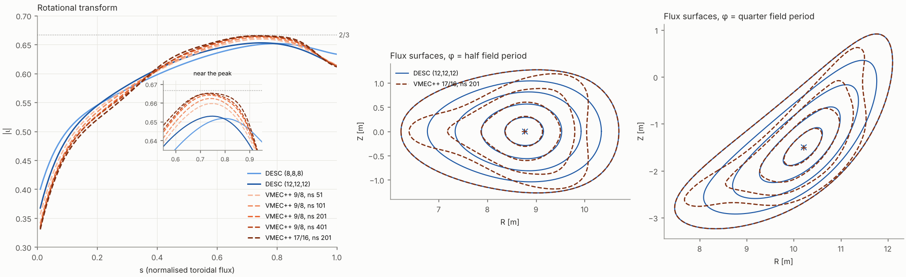
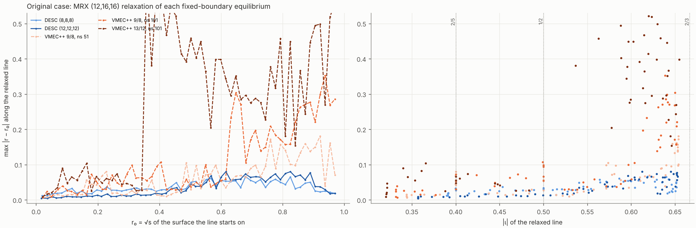
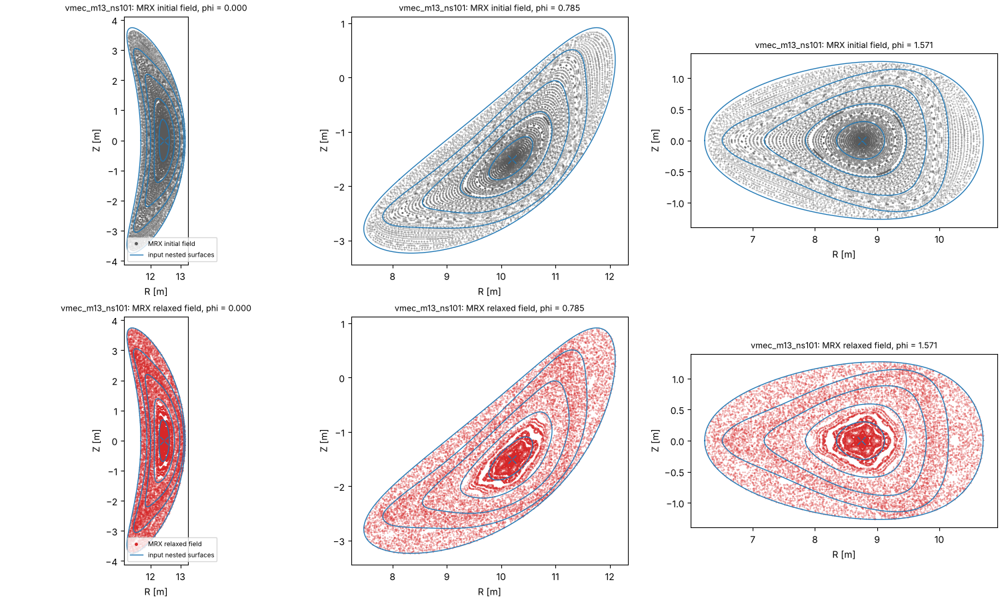
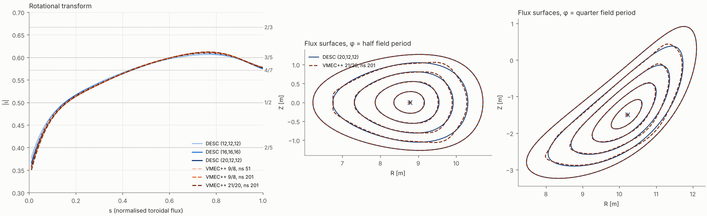
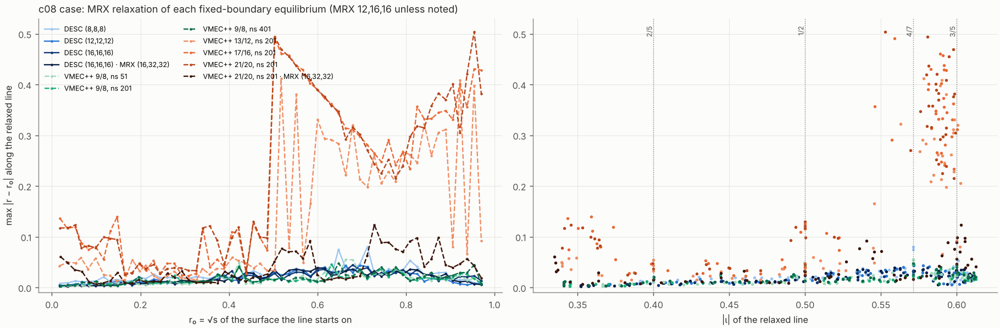
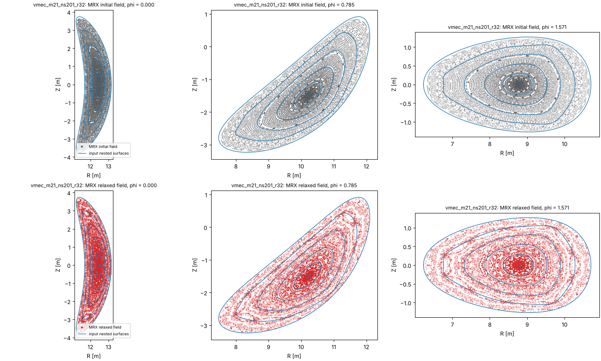
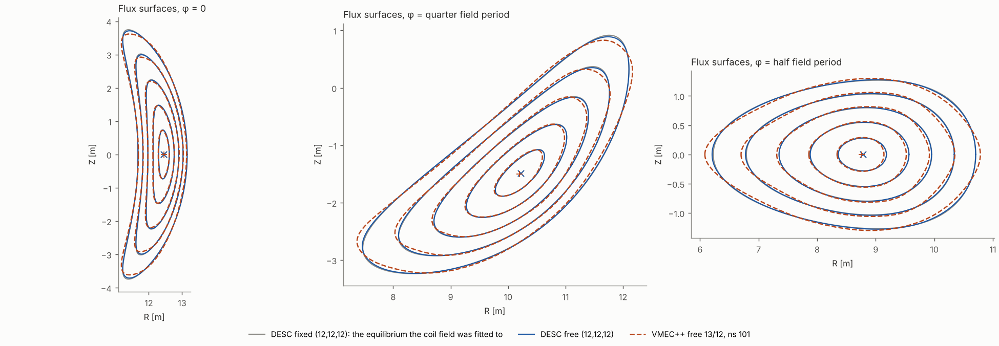
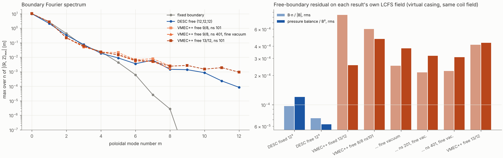

The reactor_QA DESC example, with its toroidal current made even in ρ, was solved in fixed boundary with DESC and VMEC++ on resolution ladders, and every result was relaxed with MRX to see how far the nested surfaces survive. The scaled case was then run in free boundary with both codes, using one REGCOIL coil field.
Its reversed-shear ι peaks just under 2/3. With more VMEC++ resolution the peak climbs to 0.6652 and the flux surfaces pinch near s ≈ 0.8 (√g ratio 0.0057); at ns = 401 VMEC++ no longer converges. DESC and VMEC++ cannot agree there.
ι peaks at 0.612. VMEC++ converges radially and in Fourier modes; 17/16 and 21/20 at ns = 201 differ by at most 9.6 mm.
Best DESC run, DESC (20,12,12): axis within 5.2 mm and ι within 0.0084, but the ρ = 0.8 surface is still 82 mm away. Raising L brings ι within 0.008; the outer surfaces likely need M, N ≳ 20 (VMEC++ needed mpol ≥ 17), which does not fit in 15 GB.
In the scaled case, DESC inputs and VMEC++ inputs with mpol = 9 relax with lines moving ≤ 0.09 in r, mostly at the 4/7 island chain. High-mpol VMEC++ inputs break up near ι = 3/5, but much less once MRX resolves them (43 → 15 chaotic lines at 16×32×32).
DESC (12,12,12) moves the boundary 39 mm and cuts the free-boundary residual to 7e-05 (B·n) and 6e-05 (pressure), independent of quadrature. VMEC++ stalls about 5× higher and its boundary drifts 108–143 mm, and converges in ns (ns 201 → 401: 6 mm) to a boundary 88 mm from DESC's.
PowerSeriesProfile(..., sym=False) has odd powers of ρ, which VMEC cannot represent.
It was replaced by a least-squares fit in ρ², ρ⁴, …, ρ¹⁶ (fit error 8×10⁻⁴ of max I), and the example's bootstrap-consistency optimisation was rerun
with only even powers (I(0) = 0 fixed). The kinetic profiles were then collapsed exactly into the pressure polynomial p = e n (Tₑ + Tᵢ).
Result: ⟨β⟩ = 2.54 %, I(1) = 2.53 MA, a = 1.7 m, R₀ = 10.2 m (reactor_QA_even.h5).VMECIO.write_vmec_input. VMEC++ carries the
identical boundary, Φ, pressure and enclosed current; I(s) from the wout matches DESC to all printed digits (with the sign flip from VMEC's
left-handed θ).dp/iota-calc-in-force-bal change (node pattern jacobi-dna: the innermost ρ ring gets as many nodes as
the next ring) applies cleanly to DESC 0.17.3 and was patched in; every DESC run states its pattern. Unmarked runs use the old jacobi grid..h5 or VMEC++ wout) is read by MRX, which builds its map and the file's own field B = dA′
and takes 20 Newton steps (scripts/relax.py), then traces 60 field lines for 300 periods in the same three planes.
MRX's logical r is √s of the input, so max |r − r₀| along a line measures directly how far it leaves its original surface.Raising VMEC++ resolution pushes the ι peak toward 2/3 without saturating, and the Jacobian on the surface just outside the peak heads to zero. The nested-surface solution is approaching a current sheet at the 3/1 resonance. DESC's polynomial radial basis smooths this region, so the two codes diverge in the interior as resolution grows, even though their axes converge.

| Run | ι(s=0.01) | max ι | ι(1) | surface distance to reference [mm] ρ = 0.2 · 0.4 · 0.6 · 0.8 | axis [mm] | max |Δι| | solver residual | wall [s] | |||
|---|---|---|---|---|---|---|---|---|---|---|---|
| VMEC++ 9/8, ns 51 | 0.3563 | 0.6597 | 0.6145 | 42.7 | 91.4 | 87.2 | 285.7 | 22.7 | 0.0258 | fsq 1e-13 · √g ratio 0.0902 at s=0.89 | 9 |
| VMEC++ 9/8, ns 101 | 0.3408 | 0.6624 | 0.6137 | 24.3 | 57.7 | 64.5 | 204.9 | 18.0 | 0.0134 | fsq 1e-13 · √g ratio 0.0515 at s=0.84 | 29 |
| VMEC++ 13/12, ns 101 | 0.3372 | 0.6626 | 0.6132 | 21.7 | 52.3 | 53.6 | 178.7 | 17.0 | 0.0117 | fsq 1e-13 · √g ratio 0.0365 at s=0.82 | 63 |
| VMEC++ 9/8, ns 201 | 0.3348 | 0.6642 | 0.6132 | 8.4 | 28.0 | 48.4 | 103.6 | 5.9 | 0.0076 | fsq 1e-13 · √g ratio 0.0155 at s=0.80 | 203 |
| VMEC++ 9/8, ns 401 | 0.3328 | 0.6649 | 0.6131 | 4.4 | 21.8 | 52.4 | 66.3 | 1.7 | 0.0062 | fsq 1e-09 · √g ratio 0.0003 at s=0.81 | 1181 |
| VMEC++ 17/16, ns 201 | 0.3305 | 0.6652 | 0.6114 | ref | ref | ref | ref | ref | ref | fsq 1e-12 · √g ratio 0.0057 at s=0.81 | 908 |
| DESC (8,8,8) | 0.4000 | 0.6517 | 0.6333 | 75.9 | 129.4 | 194.6 | 439.5 | 45.9 | 0.0695 | ⟨|F|⟩ norm. 4.1e-03 | 152 |
| DESC (8,8,8) jacobi-dna | 0.4112 | 0.6494 | 0.6258 | 71.2 | 170.7 | 274.4 | 480.5 | 18.4 | 0.0806 | ⟨|F|⟩ norm. 3.7e-03 | 850 |
| DESC (12,12,12) | 0.3674 | 0.6530 | 0.6133 | 37.5 | 105.6 | 175.7 | 408.8 | 9.3 | 0.0369 | ⟨|F|⟩ norm. 5.4e-04 | 1664 |
| DESC (12,12,12) jacobi-dna | 0.3763 | 0.6540 | 0.6106 | 42.7 | 117.4 | 194.3 | 409.7 | 13.2 | 0.0457 | ⟨|F|⟩ norm. 5.3e-04 | 1739 |
Reference: VMEC++ 17/16, ns 201. Surface distance is the larger of the two one-sided Hausdorff distances between the flux-surface curves, maximised over the planes φ = 0, ¼ and ½ of a field period.
VMEC++ 9/8, ns 401 stopped at its 50 000-iteration limit with fsq ≈ 1×10⁻⁹ after reaching 5×10⁻¹¹ earlier; its Jacobian ratio of 0.0003 means neighbouring surfaces nearly touch. With 12 radial splines MRX's spline map folds for both ns = 201 files. With 32, the 17/16 map still folds, and for 9/8 the map builds but the toroidal angle stops being a valid field-line parameter near r = 0.9, so no Poincaré sections could be traced.

| Input equilibrium | MRX mesh | initial ‖F‖ | final ‖F‖ | max |r − r₀| | at r₀ (ι) | chaotic lines |
|---|---|---|---|---|---|---|
| DESC (8,8,8) | 12×16×16 | 2.6e-05 | 1.1e-06 | 0.066 | 0.68 (0.619) | 3 / 60 |
| DESC (8,8,8) jacobi-dna | 12×16×16 | 1.9e-05 | 1.4e-06 | 0.101 | 0.55 (0.568) | 3 / 60 |
| DESC (12,12,12) | 12×16×16 | 3.3e-05 | 1.4e-06 | 0.080 | 0.62 (0.613) | 0 / 60 |
| DESC (12,12,12) jacobi-dna | 12×16×16 | 5.8e-05 | 1.2e-06 | 0.081 | 0.57 (0.596) | 3 / 60 |
| VMEC++ 9/8, ns 51 | 12×16×16 | 1.8e-04 | 2.9e-06 | 0.181 | 0.92 (0.654) | 5 / 60 |
| VMEC++ 9/8, ns 101 | 12×16×16 | 6.4e-04 | 5.1e-06 | 0.353 | 0.94 (0.639) | 22 / 60 |
| VMEC++ 13/12, ns 101 | 12×16×16 | 8.2e-04 | 6.3e-06 | 0.635 | 0.36 (0.633) | 45 / 60 |

VMEC++ 13/12, ns 101, original case. Top: MRX initial field (on the input surfaces). Bottom: after relaxation, surfaces outside r ≈ 0.35 are destroyed.
A scan of VMEC++ runs with the current multiplied by 0.70–0.90 picked 0.8. ι peaks at 0.61, 0.056 below 2/3, and the change of the peak between ns = 51 and 101 falls from 0.003 (original case) to 0.001. The reversed-shear top still crosses 3/5 twice with low shear (s ≈ 0.61 and 0.88). There VMEC++ resolves corner-like m ≈ 10 structure that needs mpol ≥ 17. A run at 0.7 has the same issue at 4/7.

| Run | ι(s=0.01) | max ι | ι(1) | surface distance to reference [mm] ρ = 0.2 · 0.4 · 0.6 · 0.8 | axis [mm] | max |Δι| | solver residual | wall [s] | |||
|---|---|---|---|---|---|---|---|---|---|---|---|
| VMEC++ 9/8, ns 51 | 0.3747 | 0.6096 | 0.5774 | 18.6 | 10.9 | 27.5 | 70.4 | 7.2 | 0.0245 | fsq 1e-13 · √g ratio 0.1784 at s=0.93 | 4 |
| VMEC++ 9/8, ns 101 | 0.3621 | 0.6107 | 0.5776 | 8.5 | 6.7 | 21.4 | 56.9 | 3.3 | 0.0118 | fsq 1e-13 · √g ratio 0.1697 at s=0.85 | 11 |
| VMEC++ 13/12, ns 101 | 0.3595 | 0.6108 | 0.5775 | 8.2 | 4.4 | 15.0 | 40.7 | 3.7 | 0.0093 | fsq 2e-13 · √g ratio 0.1767 at s=0.81 | 40 |
| VMEC++ 9/8, ns 201 | 0.3551 | 0.6113 | 0.5777 | 4.7 | 8.4 | 22.7 | 47.7 | 1.1 | 0.0049 | fsq 1e-13 · √g ratio 0.1604 at s=0.82 | 38 |
| VMEC++ 9/8, ns 401 | 0.3516 | 0.6117 | 0.5777 | 5.6 | 9.5 | 25.2 | 44.3 | 4.4 | 0.0017 | fsq 1e-13 · √g ratio 0.1557 at s=0.81 | 150 |
| VMEC++ 13/12, ns 201 | 0.3525 | 0.6117 | 0.5776 | 2.3 | 5.2 | 13.8 | 27.7 | 0.6 | 0.0023 | fsq 2e-13 · √g ratio 0.1592 at s=0.78 | 132 |
| VMEC++ 17/16, ns 201 | 0.3509 | 0.6117 | 0.5773 | 0.7 | 2.0 | 5.2 | 9.6 | 0.2 | 0.0007 | fsq 1e-12 · √g ratio 0.1518 at s=0.79 | 314 |
| VMEC++ 21/20, ns 201 | 0.3502 | 0.6117 | 0.5773 | ref | ref | ref | ref | ref | ref | fsq 1e-12 · √g ratio 0.1524 at s=0.79 | 603 |
| DESC (8,8,8) | 0.3982 | 0.6054 | 0.5894 | 64.4 | 73.8 | 80.1 | 129.0 | 37.3 | 0.0479 | ⟨|F|⟩ norm. 3.5e-03 | 119 |
| DESC (8,8,8) jacobi-dna | 0.4043 | 0.6044 | 0.5880 | 71.4 | 89.1 | 103.1 | 142.6 | 39.7 | 0.0541 | ⟨|F|⟩ norm. 3.3e-03 | 31 |
| DESC (12,12,12) | 0.3786 | 0.6063 | 0.5778 | 28.7 | 41.6 | 71.7 | 107.8 | 13.3 | 0.0283 | ⟨|F|⟩ norm. 5.4e-04 | 1051 |
| DESC (12,12,12) jacobi-dna | 0.3860 | 0.6070 | 0.5757 | 34.4 | 51.3 | 79.2 | 108.2 | 12.7 | 0.0358 | ⟨|F|⟩ norm. 5.3e-04 | 1017 |
| DESC (12,12,12) from VMEC++ start | 0.3752 | 0.6076 | 0.5779 | 19.5 | 27.4 | 52.3 | 84.9 | 3.9 | 0.0250 | ⟨|F|⟩ norm. 3.8e-04 | – |
| DESC (16,16,16) | 0.3662 | 0.6090 | 0.5743 | 18.8 | 30.3 | 60.3 | 100.2 | 7.9 | 0.0160 | ⟨|F|⟩ norm. 1.8e-04 | 3631 |
| DESC (20,12,12) | 0.3586 | 0.6097 | 0.5764 | 13.0 | 23.7 | 47.8 | 82.0 | 5.2 | 0.0084 | ⟨|F|⟩ norm. 1.3e-04 | 3734 |
Reference: VMEC++ 21/20, ns 201. Surface distance is the larger of the two one-sided Hausdorff distances between the flux-surface curves, maximised over the planes φ = 0, ¼ and ½ of a field period.

| Input equilibrium | MRX mesh | initial ‖F‖ | final ‖F‖ | max |r − r₀| | at r₀ (ι) | chaotic lines |
|---|---|---|---|---|---|---|
| DESC (8,8,8) | 12×16×16 | 1.9e-05 | 8.5e-07 | 0.080 | 0.71 (0.571) | 1 / 60 |
| DESC (8,8,8) jacobi-dna | 12×16×16 | 1.7e-05 | 9.8e-07 | 0.089 | 0.71 (0.571) | 0 / 60 |
| DESC (12,12,12) | 12×16×16 | 3.9e-05 | 8.7e-07 | 0.043 | 0.70 (0.578) | 3 / 60 |
| DESC (12,12,12) jacobi-dna | 12×16×16 | 3.5e-05 | 7.3e-07 | 0.047 | 0.62 (0.565) | 2 / 60 |
| DESC (12,12,12) from VMEC++ start | 12×16×16 | 4.4e-05 | 6.9e-07 | 0.039 | 0.68 (0.573) | 1 / 60 |
| DESC (16,16,16) | 12×16×16 | 5.5e-05 | 7.8e-07 | 0.045 | 0.68 (0.571) | 2 / 60 |
| DESC (16,16,16) via wout | 16×32×32 | 5.1e-06 | 5.4e-07 | 0.039 | 0.60 (0.559) | 1 / 60 |
| VMEC++ 9/8, ns 51 | 12×16×16 | 4.6e-05 | 1.2e-06 | 0.055 | 0.66 (0.571) | 1 / 60 |
| VMEC++ 9/8, ns 101 | 12×16×16 | 6.1e-05 | 1.3e-06 | 0.057 | 0.68 (0.571) | 1 / 60 |
| VMEC++ 9/8, ns 201 | 12×16×16 | 6.3e-05 | 9.4e-07 | 0.045 | 0.63 (0.572) | 0 / 60 |
| VMEC++ 9/8, ns 201 | 16×32×32 | 1.7e-05 | 8.1e-07 | 0.039 | 0.55 (0.546) | 3 / 60 |
| VMEC++ 9/8, ns 401 | 12×16×16 | 6.4e-05 | 7.8e-07 | 0.048 | 0.65 (0.571) | 2 / 60 |
| VMEC++ 13/12, ns 101 | 12×16×16 | 4.3e-04 | 1.7e-06 | 0.389 | 0.97 (0.606) | 23 / 60 |
| VMEC++ 13/12, ns 201 | 12×16×16 | 5.7e-04 | 1.5e-06 | 0.412 | 0.52 (0.578) | 26 / 60 |
| VMEC++ 17/16, ns 201 | 12×16×16 | 1.0e-03 | 2.8e-06 | 0.490 | 0.50 (0.559) | 42 / 60 |
| VMEC++ 21/20, ns 201 | 12×16×16 | 1.3e-03 | 3.7e-06 | 0.504 | 0.95 (0.553) | 43 / 60 |
| VMEC++ 21/20, ns 201 | 16×32×32 | 1.5e-04 | 1.0e-06 | 0.124 | 0.73 (0.603) | 15 / 60 |
At MRX 12×16×16 the high-mpol VMEC++ inputs start roughly 7–70 times further from force balance than the others, because MRX cannot represent their
m ≈ 10 structure, and they reconnect violently. At 16×32×32 the initial force of VMEC++ 21/20 drops eightfold and the break-up shrinks to a band near
ι = 3/5. The mpol = 9 control stays nearly intact at both MRX resolutions (0 and 3 chaotic lines), and so does DESC (16,16,16) at 16×32×32
(1 chaotic line), whose initial force there is 30 times below that of VMEC++ 21/20. DESC's .h5 could not be read at 16×32×32 within 15 GB
(MRX evaluates the full Fourier–Zernike series at every quadrature point), so that run reads the same equilibrium written as a 201-surface wout by
VMECIO.save, which reproduces it exactly on those surfaces.

Left: DESC (16,16,16), MRX 12×16×16. Right: VMEC++ 21/20, ns 201, MRX 16×32×32. In each, the top row is MRX's initial field on the input surfaces and the bottom row is the relaxed field.
The external field is a REGCOIL surface current on a winding surface 1.7 m outside the plasma (current potential with M = N = 10, λ = 10⁻²⁰),
solved against the plasma field of DESC (12,12,12) by virtual casing. It leaves max |B·n| / ⟨B⟩ = 3.4×10⁻⁴ on the fixed boundary.
VMEC++ takes it through a Biot–Savart callback that sums the same discretised surface current DESC uses (agreement 1×10⁻¹⁰), evaluated directly at its
boundary points. DESC free boundary is proximal-lsq-exact on BoundaryError (24×24 boundary grid), 15 outer iterations, then a tight force-balance solve.

| Run | LCFS shift from fixed [mm] | LCFS vs DESC free [mm] | surface distance to DESC free [mm] ρ = 0.2 · 0.4 · 0.6 · 0.8 | axis vs DESC free [mm] | B·n / |B| rms | pressure balance rms | VMEC++ DELBSQ | V [m³] | ⟨β⟩ | ι(1) | wall [s] | |||
|---|---|---|---|---|---|---|---|---|---|---|---|---|---|---|
| DESC fixed (12,12,12) = the fixed boundary | 0 | 9.7e-05 | 1.2e-04 | |||||||||||
| VMEC++ fixed 13/12, ns 101 (same boundary) | 0 | 8.4e-04 | 2.5e-04 | |||||||||||
| DESC free (12,12,12) | 39 | ref | ref | ref | ref | ref | ref | 7.3e-05 | 6.3e-05 | – | 581.6 | 2.538 % | 0.5792 | 18294 |
| VMEC++ free 9/8, ns 51 | 122 | 102 | 41.5 | 48.4 | 51.3 | 83.3 | 31.7 | 6.4e-04 | 5.0e-04 | 7.5e-04 | 580.6 | 2.533 % | 0.5821 | 400 |
| VMEC++ free 9/8, ns 101 | 138 | 118 | 39.6 | 43.9 | 47.9 | 87.9 | 27.1 | 6.0e-04 | 4.7e-04 | 6.8e-04 | 580.6 | 2.533 % | 0.5833 | 368 |
| VMEC++ free 9/8, ns 101, fine vacuum | 135 | 113 | 38.7 | 39.1 | 46.2 | 79.4 | 26.6 | 2.5e-04 | 3.8e-04 | 5.7e-04 | 580.5 | 2.532 % | 0.5830 | 1362 |
| VMEC++ free 9/8, ns 201, fine vacuum | 112 | 92 | 40.2 | 44.7 | 53.3 | 94.3 | 24.7 | 2.2e-04 | 3.2e-04 | 4.1e-04 | 580.6 | 2.533 % | 0.5828 | 1916 |
| VMEC++ free 9/8, ns 401, fine vacuum | 108 | 88 | 40.3 | 45.9 | 56.2 | 101.8 | 22.1 | 2.2e-04 | 3.1e-04 | 3.8e-04 | 580.6 | 2.533 % | 0.5828 | 3059 |
| VMEC++ free 13/12, ns 101 | 143 | 123 | 42.4 | 45.3 | 51.0 | 76.3 | 27.8 | 4.1e-04 | 4.3e-04 | 6.6e-04 | 580.5 | 2.533 % | 0.5832 | 1031 |
Residuals are computed the same way for every row: B from the run's own last closed flux surface (VMEC++: bsupu, bsupv extrapolated to s = 1), the plasma's exterior field by DESC's singular virtual-casing integral on a 97×97 grid, plus the coil field; normalised by ⟨B²⟩. DELBSQ is VMEC++'s own pressure-balance measure at the last iteration.
Both codes start from the same problem. On the fixed boundary, the plasma fields of DESC and VMEC++ point the same way, both align with the coil field (cos 0.994), and |B| agrees to 7.6×10⁻⁴. With a converged quadrature the fixed boundary is already almost a free-boundary solution: the 1.4×10⁻⁴ starting value of DESC's objective was 99 % quadrature error at 24×24 (1.5×10⁻⁶ at 48×48), while its final value, 4.0×10⁻⁷, is the same on 24, 32, 40 and 48 grids. DESC therefore moves the boundary only 39 mm.
VMEC++ reaches fsq 10⁻¹¹ but its own pressure-balance measure DELBSQ stays at 4–7×10⁻⁴, and the independent residual agrees: its free boundaries balance worse than the fixed boundary they started from. The free-boundary residual is very insensitive to the boundary shape here (DESC moved 39 mm to halve a 10⁻⁴ residual), so a 3–5×10⁻⁴ floor leaves the VMEC++ boundary free to drift about 0.1 m. A finer vacuum grid (64×64, vacuum solve every iteration) and ns = 201 lower the floor to 3×10⁻⁴ and bring the boundary closer to DESC's; ns = 401 moves the boundary only 6 mm further and leaves the residual at 3×10⁻⁴, so at 9/8 VMEC++ is converged in ns at a boundary 88 mm from DESC's. mpol 13 (coarse vacuum) does not lower the floor. Both codes' free boundaries pick up 1–20 mm of m = 5–10 shaping that the fixed boundary lacks (the coil current potential runs to M = N = 10); VMEC++ keeps 1–3 mm up to m = 12, where DESC's falls off (left panel below).

desc.config["avail_mem"] capped at 6 GB).
openVMEC++ free boundary at 9/8 (ns 51–401) and 13/12 (ns 101) is still 88–123 mm from DESC; at 9/8 it is converged in ns with a residual floor of 3×10⁻⁴. DESC free beyond (12,12,12) does not fit in 15 GB.
*.pkl, DESC *.h5, VMEC++ wout_*.nc, MRX runs mrx_*/12_desc_from_vmec.py and the job queue queue.sh13_report_figs.py) and tables (14_report_tables.py)